通过线刷简单获取Root
- 刷机的第一步要先解锁Bootloader，目前也并不是所有手机都支持解锁，具体需看各家厂商对刷机的态度，各家的手机解锁方法也略有不同。另外，解锁Bootloader会清空手机数据。
- 当你解锁了Bootloader后就可以在手机上下载并安装Magisk或Magisk Delta了
- 接下来为了修补boot需要获取boot镜像，一般我们会从当前系统的卡刷包或者线刷包中提取
- 首先需要下载当前系统的卡刷包或者线刷包（一定要是当前的系统版本！！！）
- 解压
- 若刷机包内有boot.img就直接拿出来备用，若没有boot.img但有payload.bin可使用payload-dumper-go提取boot.img（使用payload-dumper-go提取payload.bin中的boot.img）
- 将提取出的boot.img传输到手机的内部存储中
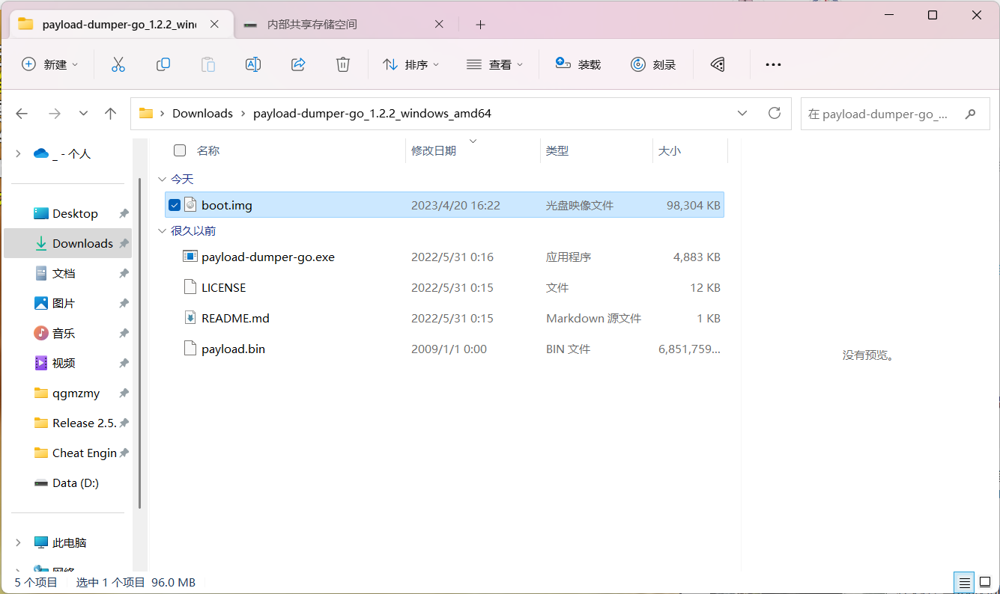
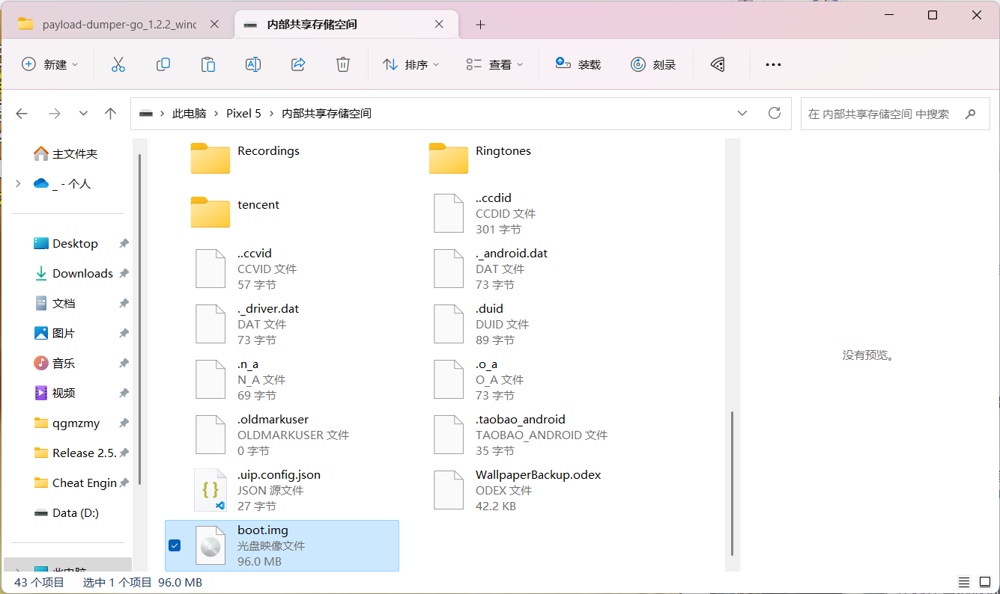
- 在手机中打开Magisk或Magisk Delta
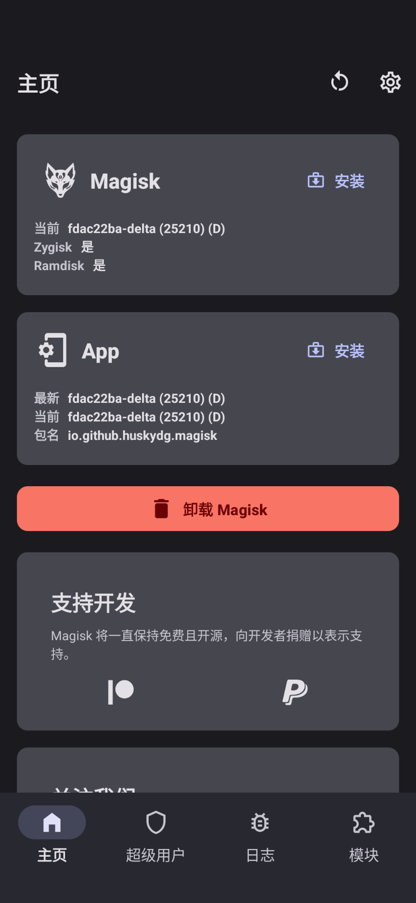
- 点击Magisk旁的安装
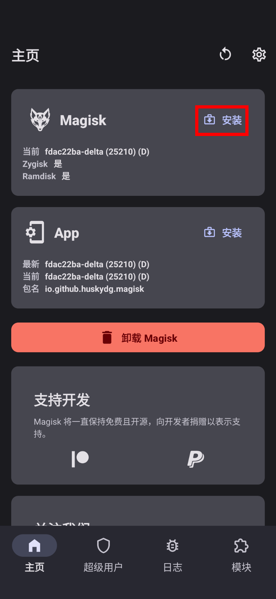
- 选择“选择并修补一个文件”
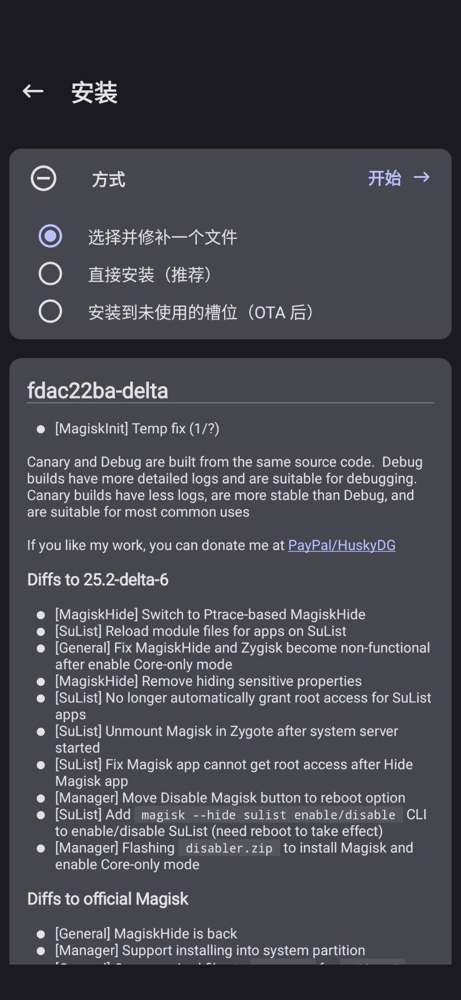
- 选择boot.img并点击开始
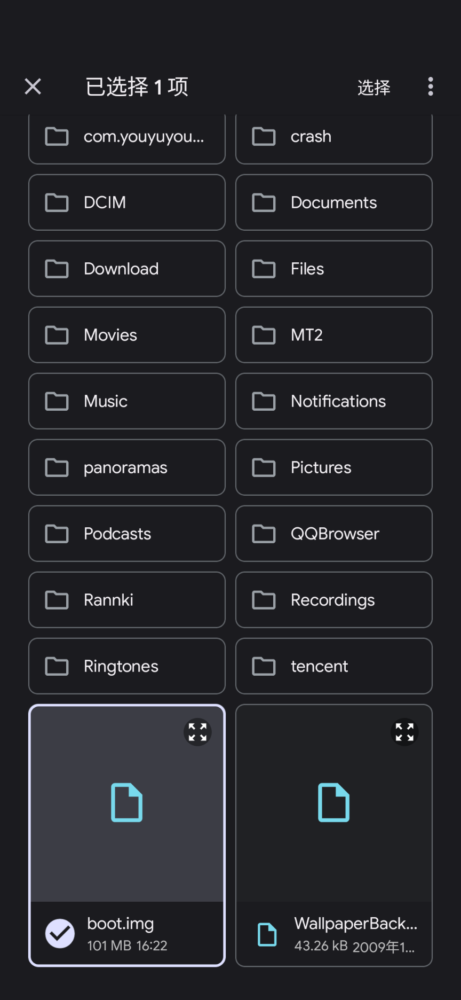
- 将修补后的boot从Download移动到电脑
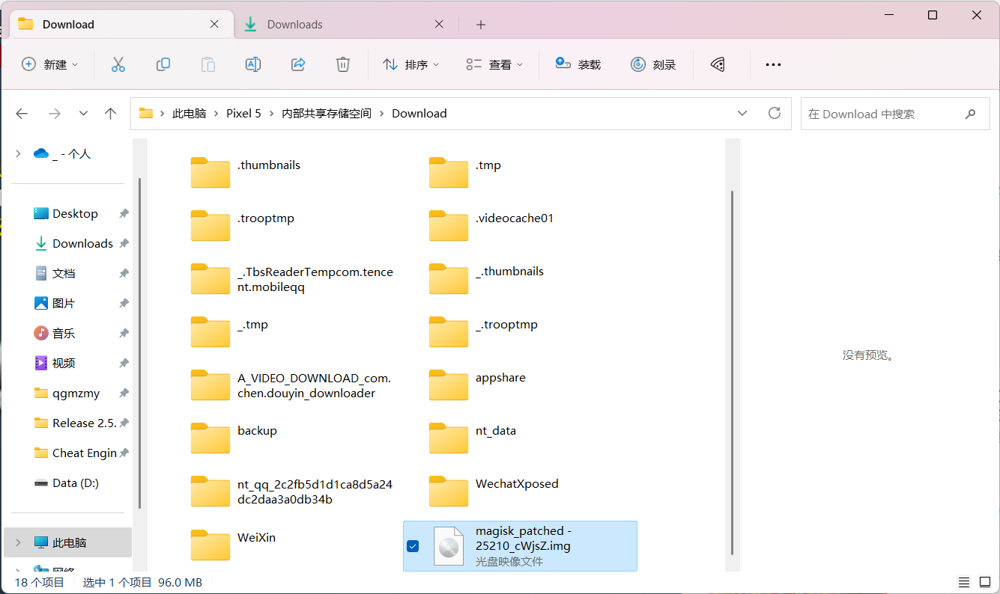
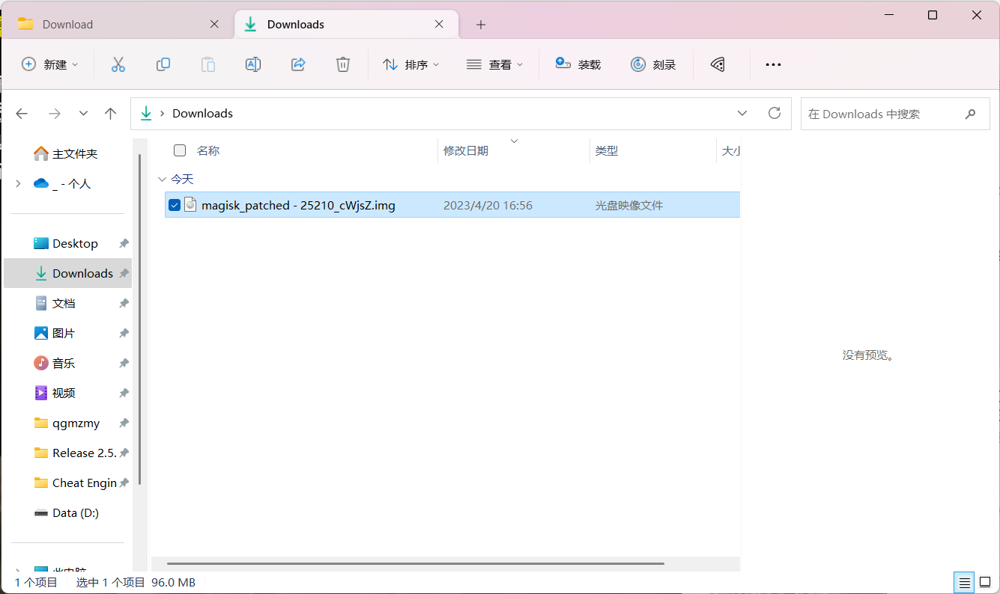
- 打开设置
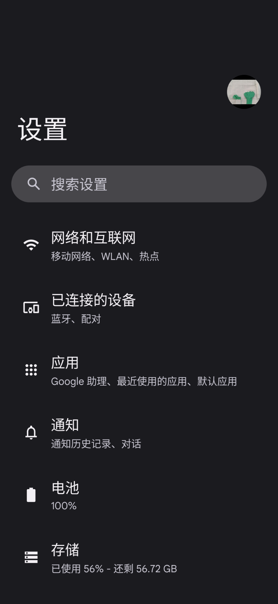
- 打开关于手机
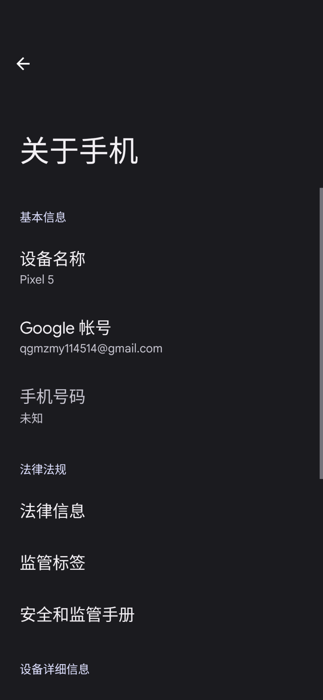
- 连续点击版本号直至打开开发者模式
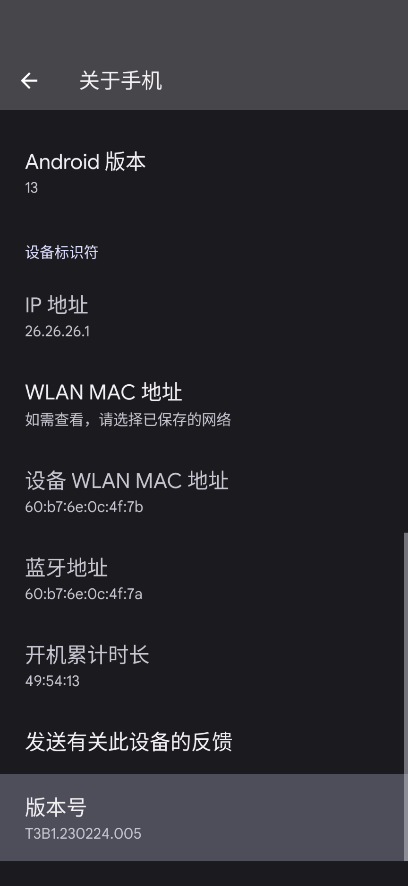
- 在开发者选项中打开“USB 调试”
- 在电脑上下载platform-tools并解压
- 在解压后得到的文件夹中打开cmd
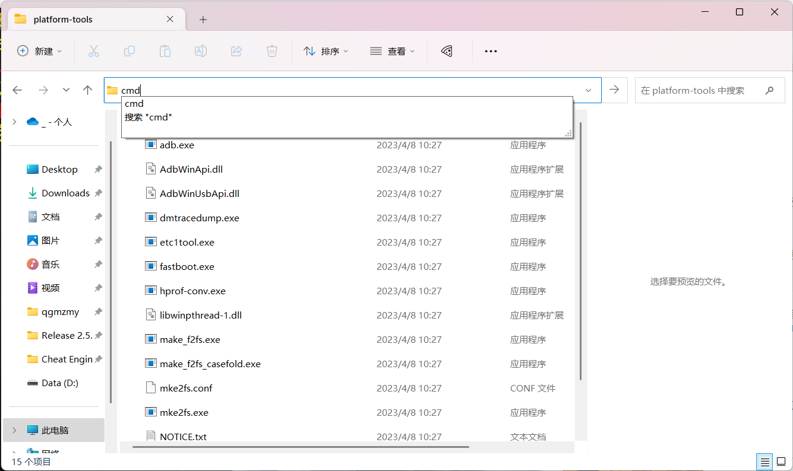
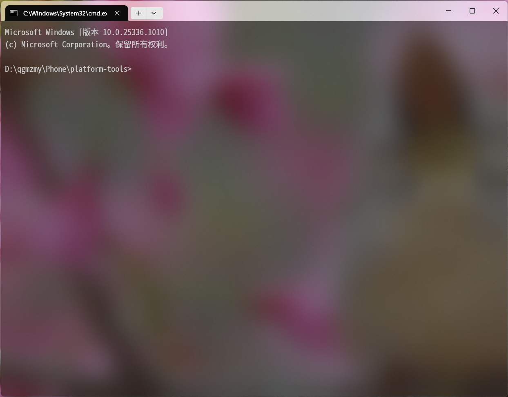
- 在cmd中输入：
adb reboot bootloader
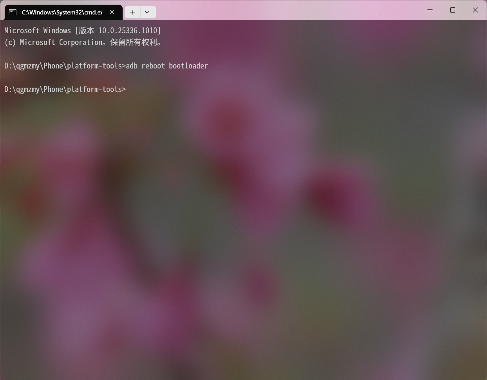
- 进入Fastboot后输入：
fastboot flash boot <Boot Image>
# 此处“<Boot Image>”表示修补后的boot镜像。
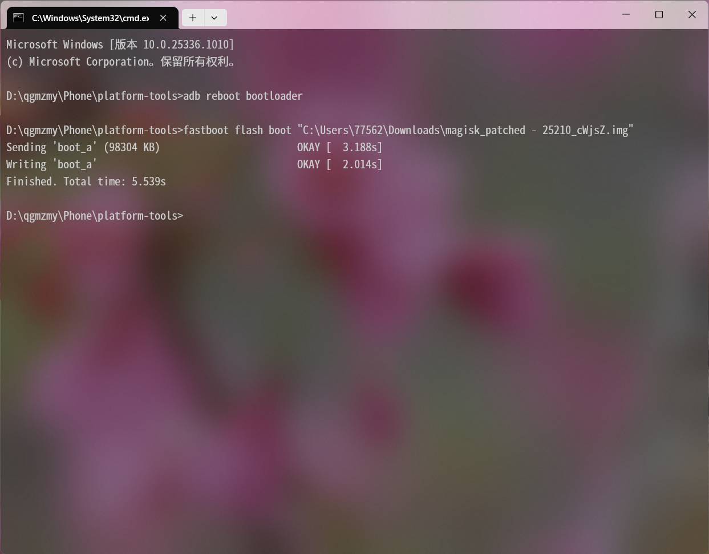
- 重启手机，Root成功
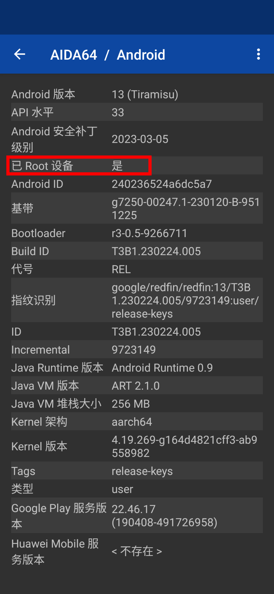